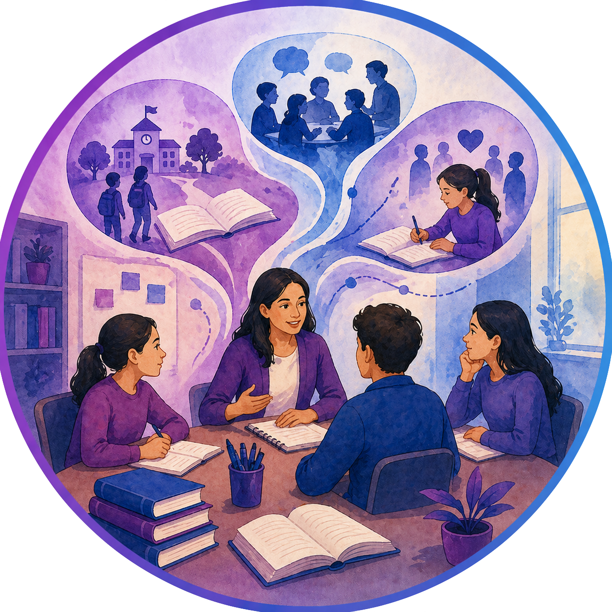
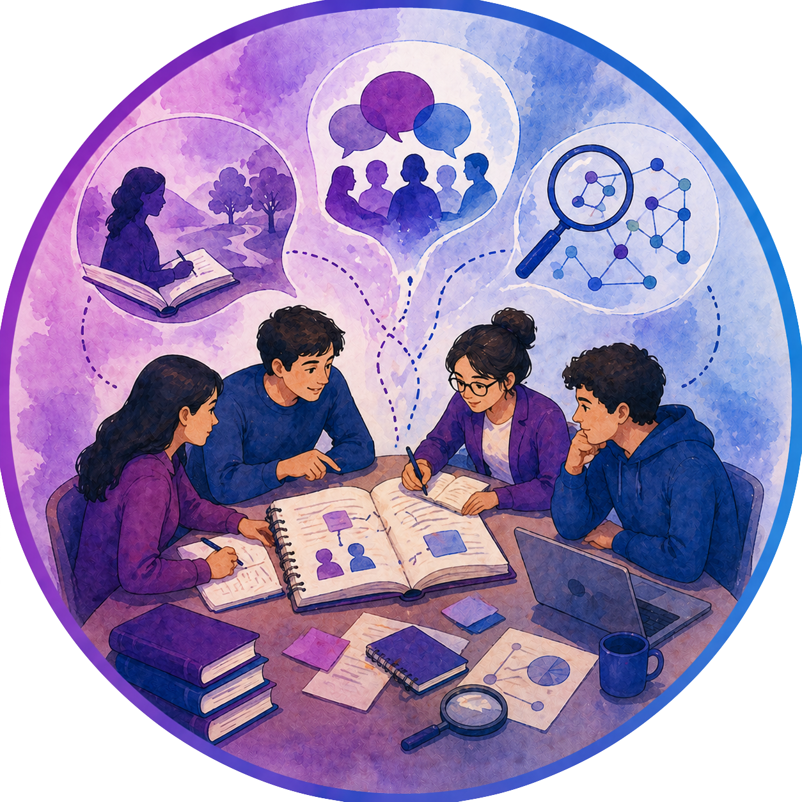

La metodología de trabajo en el ll Coloquio tendrá como estrategias mesas de diálogo narrativo organizados por líneas temáticas en los que los participantes comparten relatos pedagógicos, investigaciones o experiencias, seguidos de momentos de preguntas problematizadoras y conversación académica, talleres reflexivos y metodológicos orientados a la experimentación de herramientas narrativas (diarios, autobiografías, sistematización de experiencias, relatos de aula) como estrategias de investigación y formación docente, además de conversatorios con panelistas expertos orientados por preguntas generadoras, en los que se discuten tensiones, aportes y desafíos del enfoque narrativo en la investigación educativa y la reestructuración curricular.
Las narrativas pedagógicas cómo metodología de investigación educativa en los procesos de formación de docentes y reestructuración curricular.

En esta línea de trabajo se esperan recibir resúmenes de procesos de investigación que puedan dar cuenta de experiencias asociadas a las narrativas escolares, las cuales se fundamentan en el relato de las experiencias significativas vividas por maestros y estudiantes dentro de la escuela. Posibilitan la reflexión sobre: La práctica educativa, el sentido a lo que ocurre en el aula, mediante el diálogo y el argumento. Las narrativas se constituyen como procesos que posibilitan el sentido discursivo de los sujetos (tanto de maestros como estudiantes) y que, para este caso en particular, logren exponer aquellos relatos de la vida escolar en el marco de las prácticas educativas.
También se esperan recibir resúmenes que documenten procesos de prácticas pedagógicas (Zuluaga, 1987), aquellas, entendidas desde una acepción metodológica que permite analizar la pedagogía como un saber. No se limita al acto de enseñar, sino que es el conjunto de procesos que ocurren en la escuela y que articulan a maestros y estudiantes, discursos e instituciones. De esta manera, la práctica pedagógica no se supedita a “lo que hace el maestro” en el aula, sino que trasciende, en los procesos de interacción dialógica de maestros y estudiantes hacia el saber pedagógico.
La formación de maestros y maestras no responde a un simple ejercicio de transferencia de conocimientos, es un proceso sistemático que se fundamenta en la praxis crítica (reflexión - acción). En esta línea se le apuesta a recibir trabajos de investigación, reflexión teórica o propuestas para la realización de talleres que se ocupen de los procesos de formación de maestros y maestras. Se espera contar con la participación de profesores y profesoras en ejercicio y en formación que han sistematizado y están sistematizando sus prácticas pedagógicas.

Esta línea busca la presentación de propuestas que documenten experiencias docentes y reflexión sobre la práctica y el saber pedagógico. Las narrativas pedagógicas se establecen no sólo como una forma de expresión, sino como una metodología que permite investigar y visibilizar los saberes prácticos, a través de relatos escritos y orales que dan cuenta de una visión crítica que transforma la experiencia vivida, como insumo para la construcción de un conocimiento situado que contribuye al quehacer pedagógico. Johnson and Golombek (2018) creen en el valor educativo de la investigación narrativa, caracterizando las narrativas pedagógicas como un espacio de desarrollo profesional docente que se soporta en la investigación desde una perspectiva teórica sociocultural, creando espacios dialógicos para reconceptualizar las narrativas docentes en el tiempo, el espacio y el contexto cambiante del aula.